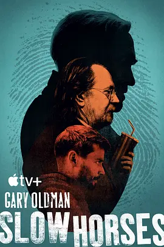

8.7
流人 第四季
Slow Horses Season 4
2024
英国
评分 8.7
导演:
亚当·兰道
演员:
加里·奥德曼 / 杰克·劳登 / 克里斯汀·斯科特·托马斯 / 乔纳森·普雷斯 / 雨果·维文
类型:
剧情,惊悚
剧情简介
故事以一场突如其来的爆炸打破伦敦的夜色作为开端，火光映亮街角，也照出情报体系深处被尘封的秘密。警报声回荡在城市上空，各部门迅速调度，而斯劳豪斯的成员们，尽管仍带着“问题特工”的名号，却很快被卷入核心调查。杰克逊·兰姆拖着疲惫身影在废旧办公室间踱步，他不耐烦地甩出几句刻薄嘲讽，却敏锐捕捉到事态背后的异常味道。本季的危机在于看不见的内部裂缝。爆炸余波牵动军情五处的神经，旧日档案被重新调出，一些沉睡多年的名字再次浮上表面。里弗在审查残留证据时意外触碰到关键线索，他穿梭于破损现场与暗巷角落，试图将碎片拼成完整图景，却屡屡陷入他人有意设置的迷雾。随着调查深入，戴安娜·塔弗纳面临更复杂的权力压力。会议室内的气氛紧绷，高层间的谈话看似平静，却暗含牵动全局的指令。雨果·维文饰演的神秘角色以一种低调却危险的姿态进入故事，他的从容让人难辨立场，像一道阴影游走在情报网络中，不经意间改变局势方向。爆炸只是开端，更深的秘密在暗处静伏。斯劳豪斯的成员们在不断升级的威胁中奔走：清晨的街道被封锁，夜色中的追踪闪过刺目的灯光，信息流在服务器间穿梭，所有线索都导向一个可能颠覆整个体系的真相。尽管他们依然笨拙、狼狈、互相抱怨，但在关键时刻，每个人都露出一丝意想不到的坚韧。第四季继续保持冷峻的英式间谍质感，在紧张节奏与隐秘权力博弈中，斯劳豪斯的命运再次被推向风口浪尖。他们从来不是体系的英雄，却一次又一次地在边缘处挺住风暴。